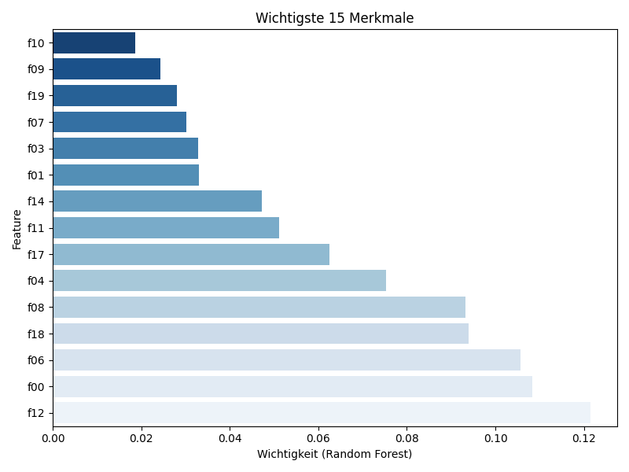
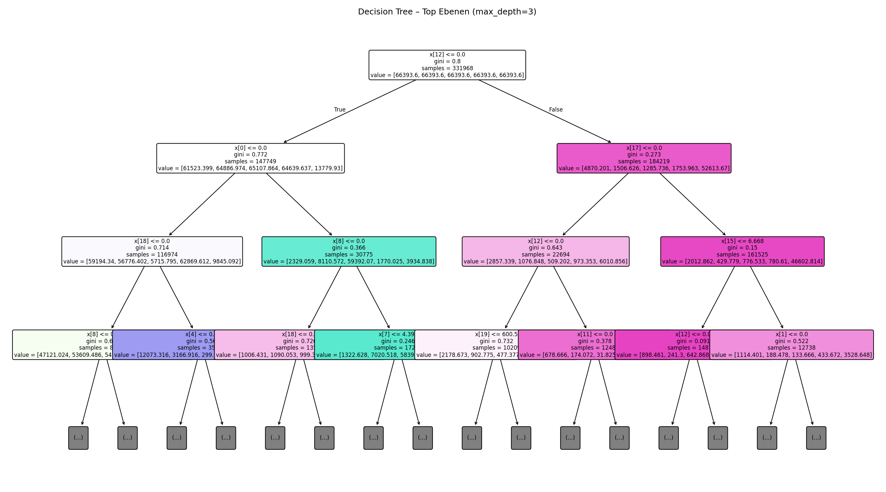

Diese Seite erklärt das Modell mit einfachen Bausteinen: (1) Welche Merkmale sind global wichtig? (2) Welche Regeln nutzt ein Entscheidungsbaum? (3) Wie sieht ein einfacher Surrogat-Baum aus, der das MLP imitiert?
Ein Random Forest schätzt, welche Features am meisten zur Entscheidung beitragen.
Ein flacher Blick auf die ersten Ebenen des Baums.
IF f12 <= 0.000 AND f00 <= 0.000 AND f18 <= 0.000 AND f08 <= 0.000 AND f04 <= 0.000 AND f08 <= 0.000 AND f02 <= 0.000 THEN class = 4 IF f12 <= 0.000 AND f00 <= 0.000 AND f18 <= 0.000 AND f08 <= 0.000 AND f04 <= 0.000 AND f08 <= 0.000 AND f02 > 0.000 AND f17 <= 0.000 THEN class = 1 IF f12 <= 0.000 AND f00 <= 0.000 AND f18 <= 0.000 AND f08 <= 0.000 AND f04 <= 0.000 AND f08 <= 0.000 AND f02 > 0.000 AND f17 > 0.000 THEN class = 0 IF f12 <= 0.000 AND f00 <= 0.000 AND f18 <= 0.000 AND f08 <= 0.000 AND f04 <= 0.000 AND f08 > 0.000 AND f04 <= 0.000 AND f22 <= 0.000 THEN class = 1 IF f12 <= 0.000 AND f00 <= 0.000 AND f18 <= 0.000 AND f08 <= 0.000 AND f04 <= 0.000 AND f08 > 0.000 AND f04 <= 0.000 AND f22 > 0.000 THEN class = 0 IF f12 <= 0.000 AND f00 <= 0.000 AND f18 <= 0.000 AND f08 <= 0.000 AND f04 <= 0.000 AND f08 > 0.000 AND f04 > 0.000 AND f17 <= 0.000 THEN class = 1 IF f12 <= 0.000 AND f00 <= 0.000 AND f18 <= 0.000 AND f08 <= 0.000 AND f04 <= 0.000 AND f08 > 0.000 AND f04 > 0.000 AND f17 > 0.000 THEN class = 0 IF f12 <= 0.000 AND f00 <= 0.000 AND f18 <= 0.000 AND f08 <= 0.000 AND f04 > 0.000 AND f04 <= 0.000 AND f01 <= 0.000 AND f03 <= 0.000 THEN class = 3 IF f12 <= 0.000 AND f00 <= 0.000 AND f18 <= 0.000 AND f08 <= 0.000 AND f04 > 0.000 AND f04 <= 0.000 AND f01 <= 0.000 AND f03 > 0.000 THEN class = 0 IF f12 <= 0.000 AND f00 <= 0.000 AND f18 <= 0.000 AND f08 <= 0.000 AND f04 > 0.000 AND f04 <= 0.000 AND f01 > 0.000 AND f00 <= 0.000 THEN class = 0 IF f12 <= 0.000 AND f00 <= 0.000 AND f18 <= 0.000 AND f08 <= 0.000 AND f04 > 0.000 AND f04 <= 0.000 AND f01 > 0.000 AND f00 > 0.000 THEN class = 0 IF f12 <= 0.000 AND f00 <= 0.000 AND f18 <= 0.000 AND f08 <= 0.000 AND f04 > 0.000 AND f04 > 0.000 AND f19 <= 601.500 AND f00 <= 0.000 THEN class = 0 IF f12 <= 0.000 AND f00 <= 0.000 AND f18 <= 0.000 AND f08 <= 0.000 AND f04 > 0.000 AND f04 > 0.000 AND f19 <= 601.500 AND f00 > 0.000 THEN class = 0 IF f12 <= 0.000 AND f00 <= 0.000 AND f18 <= 0.000 AND f08 <= 0.000 AND f04 > 0.000 AND ... (gekürzt)
Ein kleiner Baum (Tiefe=4) lernt, das MLP nachzuahmen – gut für eine globale Erklärung.
Kein Surrogat-Bild vorhanden.
[N1] IF f12 <= 0.000 AND f00 <= 0.000 AND f18 > 0.000 AND f04 <= 0.000 AND f18 <= 0.000 AND f17 > 0.000 AND f00 > 0.000 AND f02 > 0.000 THEN class = N1 [N2] IF f12 <= 0.000 AND f00 > 0.000 AND f08 <= 0.000 AND f18 <= 0.000 AND f04 > 0.000 AND f12 <= 0.000 AND f02 > 0.000 AND f04 > 0.000 THEN class = N1 [N3] IF f12 <= 0.000 AND f00 > 0.000 AND f08 > 0.000 AND f07 <= 4.397 AND f00 > 0.000 AND f03 <= 0.000 AND f07 > 3.655 AND f17 <= 0.000 THEN class = N3 [R] IF f12 <= 0.000 AND f00 <= 0.000 AND f18 <= 0.000 AND f08 > 0.000 AND f00 <= 0.000 AND f18 <= 0.000 AND f00 > 0.000 AND f01 <= 0.000 THEN class = N2 [W] IF f12 <= 0.000 AND f00 <= 0.000 AND f18 <= 0.000 AND f08 <= 0.000 AND f04 > 0.000 AND f04 <= 0.000 AND f01 > 0.000 AND f00 <= 0.000 THEN class = N1
Decision Tree: Accuracy: 0.801 | Balanced Acc.: 0.721 | Cohen's κ: 0.639
Random Forest: Accuracy: 0.880 | Balanced Acc.: 0.794 | Cohen's κ: 0.769
Surrogat (Fidelity zum MLP): keine Daten gefunden.
Tipp: Regeln lesen sich wie IF-THEN-Statements. Beispiel: "IF alpha_power <= 0.12 AND delta_power > 0.05 THEN class = R"